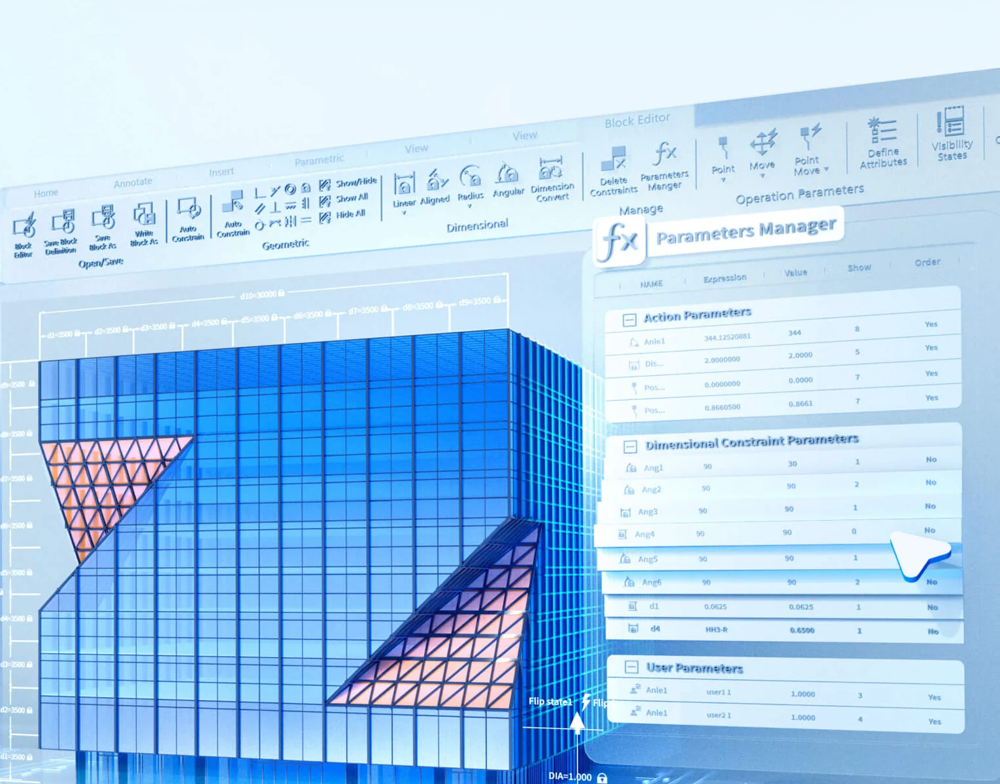
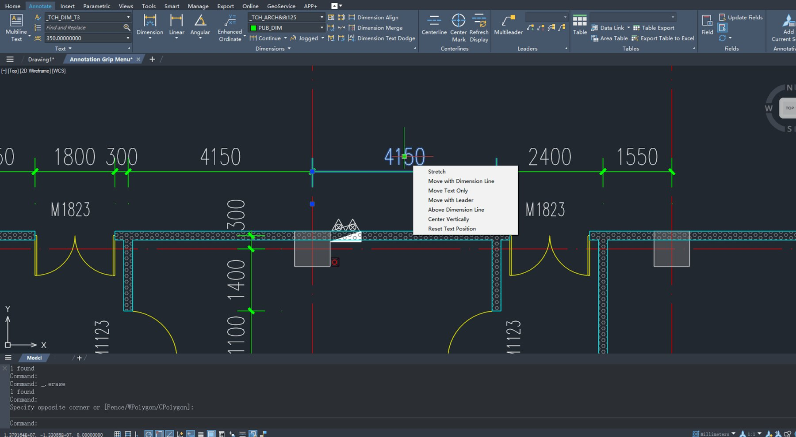
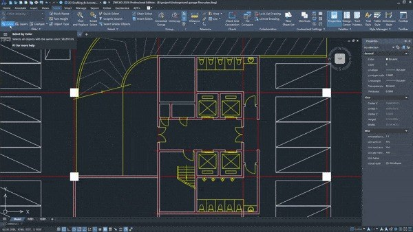
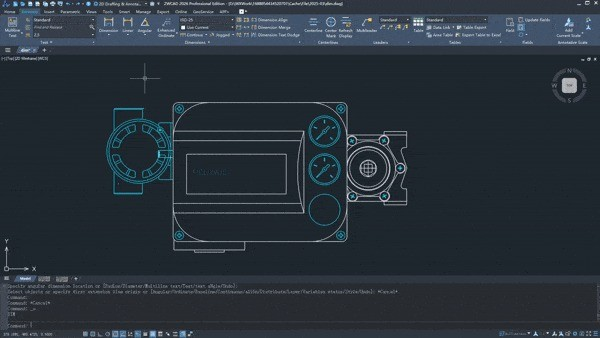
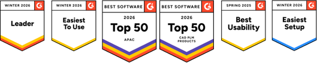

Smart tools & AI
Smart Match, Smart Select, Smart Plot, Smart Mouse, dan Smart Voice memangkas langkah yang berulang.
Drafting 2D yang familiar. Kecepatan yang terasa.
Buka file DWG, kerjakan denah dan detail, lalu kirim ke mitra tanpa konversi. ZWCAD menjaga kebiasaan kerja tim Anda — dan memangkas biaya lisensi yang tidak perlu.

ZWCAD dibuat untuk drafter yang tidak punya waktu mempelajari ulang dasar-dasar CAD. Command, shortcut, dan logika kerja tetap sama. Yang berubah: kecepatan, biaya, dan kebebasan lisensi.
Ribbon, layer, command line, dan properties panel tersusun seperti kebiasaan drafting Anda. Tiga tangkapan layar berikut memperlihatkan workspace, drawing arsitektur, dan part mekanik di ZWCAD.



Bukan daftar fitur yang dipajang lalu dilupakan. Semuanya dipakai di pekerjaan nyata: menggambar, merevisi, membandingkan, dan mencetak.
Smart Match, Smart Select, Smart Plot, Smart Mouse, dan Smart Voice memangkas langkah yang berulang.
Impor beberapa halaman PDF sekaligus sebagai objek CAD, lalu edit sebagai geometri biasa.
Bandingkan dua drawing sekaligus dan lihat perbedaannya tanpa harus membuka keduanya berdampingan.
Kelola, akses, dan plot banyak drawing dari satu panel. Konsisten untuk paket dokumen besar.
Baca dan proses point cloud yang kompleks — lampirkan, edit, dan kelola sebagai bagian dari drawing.
Tambahkan constraint geometri dan dimensi, atau buat blok dinamis yang berubah bentuk sesuai kebutuhan.
Fitur lanjutan untuk pekerjaan teknis, plus alat pintar yang menghilangkan repetisi. Pilih kategori untuk melihat detailnya.
Dirancang untuk drafter yang mengerjakan detail, revisi, dan dokumentasi dalam volume besar — tanpa menambah langkah manual.
Tambahkan geometric dan dimension constraints untuk mengubah ukuran dan bentuk secara cepat dan terkontrol.
Blok dengan action dan parameter. Satu blok dapat berubah bentuk mengikuti kebutuhan desain.
Lampirkan, edit, dan kelola point cloud kompleks dengan performa yang tetap responsif.
Lihat, akses, kelola, dan plot banyak drawing sekaligus dari satu panel terpusat.
Impor beberapa halaman PDF dalam satu langkah sebagai objek CAD yang dapat diedit.
Temukan perbedaan antara dua drawing dalam sekali lihat — berguna saat review revisi.
Hitung luas secara otomatis dan hasilkan tabel area dalam beberapa langkah.
Smart tools mengenali pola dan niat Anda, lalu menyelesaikan pekerjaan membosankan dengan lebih sedikit klik.
Identifikasi bentuk identik secara otomatis dan edit secara batch.
Cari blok serupa di file lokal berdasarkan bentuk yang Anda tentukan.
Plot batch lintas file dengan pencocokan ukuran kertas otomatis.
Filter objek berdasarkan warna, tipe, dan atribut dalam satu seleksi.
Jalankan command yang sering dipakai lewat gestur mouse.
Tambahkan anotasi suara tanpa repot mengedit teks.
Pengujian internal ZWSOFT terhadap 500+ file DWG berukuran 0,017–1.237 MB. Operasi yang diuji mencakup open, pan, zoom, copy, move, select, erase, copyclip, pasteclip, dan save.
Operasi yang sama, file uji yang sama, dijalankan berdampingan. Rekaman ini memperlihatkan selisih waktu saat drawing dibuka dan dinavigasi.
ZWCAD 44,2 s · AutoCAD 87,6 s · selisih 1,98×File DWG diuji untuk drafting 2D
File DWG diuji untuk navigasi 3D
Operasi drafting yang diukur
Windows 10 · i7 · RTX 3060 · 32 GB
Hasil dapat berbeda tergantung perangkat, sistem operasi, konfigurasi, dan material uji. AutoCAD adalah merek dagang Autodesk, Inc.
Standar gambar kantor Anda adalah aset. Kami memindahkannya, bukan memintanya dibuat ulang.
Jadwalkan sesi migrasiHarga distributor resmi dalam IDR untuk lisensi perpetual. Network license, jumlah seat, dan paket support dihitung terpisah lewat penawaran.
*Harga distributor resmi ZWCAD Indonesia untuk lisensi Standalone. Network license tersedia dengan harga terpisah. Harga dapat berubah mengikuti kebijakan ZWSOFT.
“Yang saya butuhkan bukan software baru untuk dipelajari. Saya butuh alat yang langsung bekerja dengan file dan kebiasaan tim.”
Lencana ZWSOFT dari Winter 2026 dan Spring 2025 — termasuk Leader, Easiest to Use, Top 50 APAC, Top 50 CAD PLM Products, Best Usability, dan Easiest Setup.

Pertanyaan teknis dan komersial yang paling sering kami terima. Butuh jawaban spesifik? Hubungi tim kami.
Ya. ZWCAD membaca dan menulis DWG secara native, termasuk DXF dan DWT. File dapat dibuka dari AutoCAD dan aplikasi CAD lain, diedit, lalu dikembalikan tanpa konversi manual.
ZWCAD menawarkan alur kerja 2D yang sangat mirip dengan antarmuka dan command yang familiar, dengan model lisensi perpetual dan biaya kepemilikan yang lebih rendah. Untuk kebutuhan spesifik, kami dapat melakukan perbandingan fitur berdasarkan workflow tim Anda.
ZWCAD mendukung LISP, VBA, ZRX, dan .NET. Sebagian besar aplikasi dapat berjalan langsung atau dengan penyesuaian kecil. Kami dapat membantu menguji aplikasi kritikal Anda selama proses migrasi.
ZWCAD berjalan pada Windows 64-bit dengan RAM 8 GB (disarankan 16 GB) dan GPU yang mendukung OpenGL. Untuk drawing dan point cloud berukuran besar, RAM 32 GB dan GPU diskrit sangat disarankan.
Bisa, dengan proses deaktivasi dan aktivasi ulang sesuai ketentuan lisensi. Untuk tim yang sering berpindah perangkat, lisensi network biasanya lebih praktis.
Trial 30 hari tersedia melalui tautan unduh resmi. Daftar harga lisensi dalam IDR ada di bagian lisensi halaman ini. Untuk konfigurasi network atau jumlah seat khusus, isi formulir kontak atau hubungi WhatsApp kami.
ZWCAD untuk drafting dan dokumentasi 2D. ZW3D untuk desain mesin, simulasi, CAM, dan data produk. Keduanya bisa berjalan berdampingan.
Drafting 2D, dokumentasi DWG, dan alur kerja familiar untuk arsitektur, sipil, dan manufaktur.
Part, assembly, drawing, simulasi, dan toolpath di atas satu geometri yang sama.
Demo 30–45 menit, tanpa kewajiban membeli. Kami gunakan drawing Anda, bukan sampel.